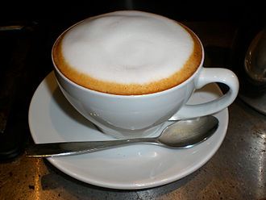

Cappucchino.

Cappucino can be recognised often by the quantity of foam served on top of the drink.
When the milk is being stretched (steamed) the barista will incorporate a greater amount of air into the milk, this in turn creates a greater quantity of foam.
A cappuccino will generally be served to the following proportions:
1/3 Espresso
1/3 Steamed Milk
1/3 Froth